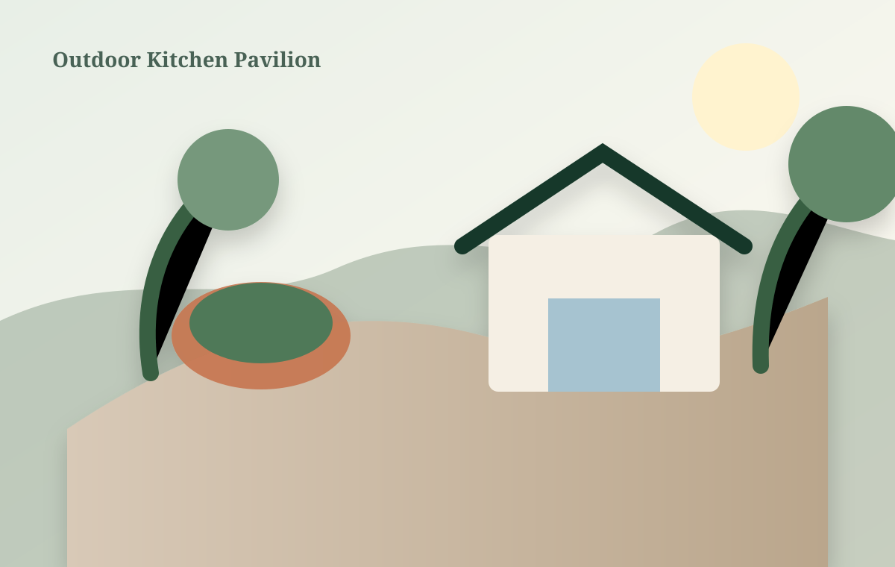
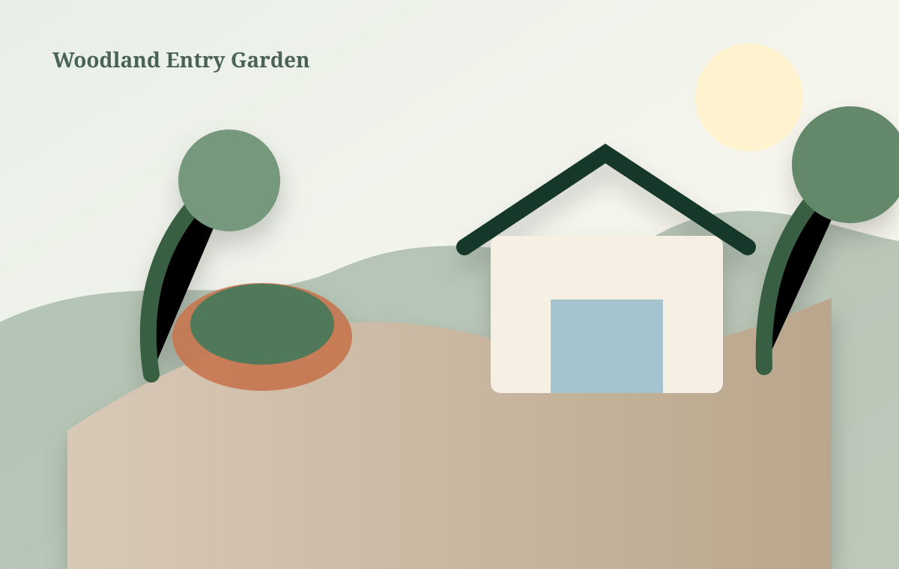
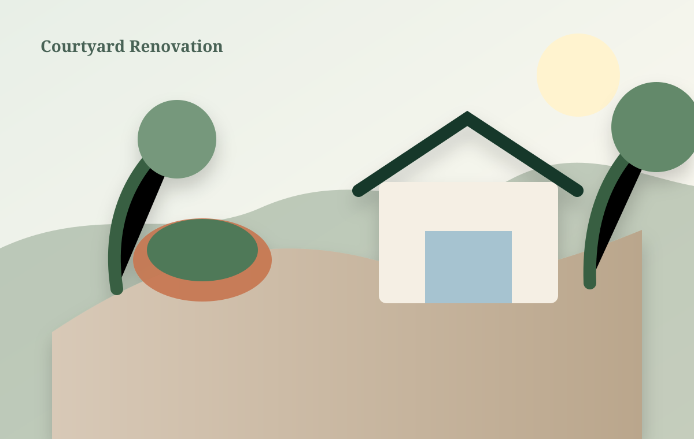

Garden Terrace & Fire Court
Layered entertaining terrace with natural stone, seat walls, and four-season planting.
Each project responds to a different home, property, family, and way of living outside.
Layered entertaining terrace with natural stone, seat walls, and four-season planting.

Covered cooking, dining, storage, lighting, and utility coordination for year-round use.

Native-forward front landscape designed for shade, deer pressure, and seasonal depth.
Stone paving, shade, drainage, privacy planting, and low-glare evening lighting.

Regraded courtyard with permeable paving, water feature, and intimate garden rooms.
Lawn reduction, meadow establishment, specimen trees, and mown circulation paths.
The original yard sloped sharply away from the house, offered no comfortable gathering area, and directed stormwater toward a lower neighbor.
We designed two connected terraces, concealed drainage, a linear fire feature, and layered planting that softens grade transitions while preserving the view.
Begin with an on-site consultation and a thoughtful plan.